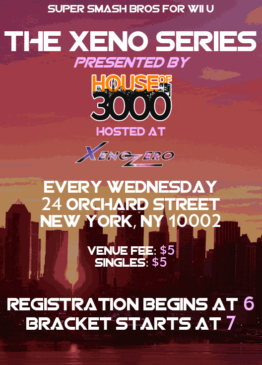

Weeklies

What makes our weeklies unique?
Station Card System
As a T.O., running the tournament smoothly and on time is top priority. One way we assure the tournament runs smoothly, is by having numbered Station Cards! When we call a match, the players should walk over to the T.O. desk and pick up the card, whose number tells them which station to play at. The players play their set, and the winner comes back with the card to give us the result of the set. Doing this makes it easy to avoid people hogging stations for friendlies mid-tournament, because we can look at a station and know that it isn't a tournament set being played if the card is absent. Having the cards at the T.O. desk tells us which stations are open, and towards the end of the tournament we can see which stations are no longer necessary for the tournament, thus opening them up for friendlies.
Game Sound
If you feel more comfortable listening to game sound during a tournament set, and focus on that instead of the sound around you, we have you covered. On request, we have audio splitters available for you to borrow and bring to your setup. You plug it into the monitor, and plug your headphones (not provided) into the splitters, so you and your opponent can both have the audio cues necessary to play at your peak.